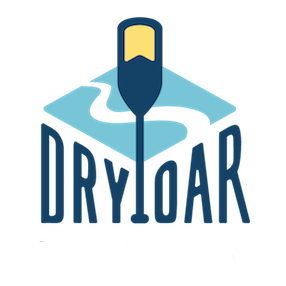

Overview
Purpose
Dry Oar introduces visitors to whitewater rafting, camping, and river adventures. The website should help people picture the experience, explore their interests, and understand what to expect before planning a trip.
Audience
The site is for first-time rafters, families, friends, and experienced paddlers looking for time outdoors. Visitors need clear descriptions, useful photos, and easy navigation so they can find an adventure that matches their comfort level.
Website goals
- Make the activities easy to find from the home page.
- Use real outdoor photos and short, welcoming descriptions.
- Keep text readable and navigation simple on phones and computers.
Branding
Website Logo

Use the same Dry Oar logo throughout the website. The overall style should feel outdoorsy, friendly, and adventurous.
Style Guide
Color Palette
Teal and aqua connect the design to the river. Peach highlights buttons and photo borders, while the pale background keeps the page light.
| Primary | Secondary | Accent 1 | Accent 2 |
|---|---|---|---|
| Deep teal #006D77 |
River aqua #83C5BE |
Warm peach #E29578 |
Pale blue #EDF6F9 |
Typography
Heading Font: IM Fell French Canon
Use this font for the main title and feature headings to give the site a classic outdoor feel.
Paragraph Font: Lato
Use Lato for descriptions, navigation, and buttons. Keep paragraphs short and leave enough space between lines.
Normal paragraph example
Grab a paddle and discover a new view of the outdoors. From peaceful stretches of river to exciting rapids, Dry Oar is all about making memories along the way.
Colored paragraph example
There is more to an adventure than the rapids. Take in the mountains, enjoy a night under the stars, and spend time with the people who make the trip special.
Navigation with Hover
This example links to the current website and sections of this plan. Future pages are shown in the site map below.
Site Map
The home page is built. Adventures and Contact Us are planned additions.
Adventures page plan
This future page will introduce river trips, camping, and rapids in more detail. Each activity should have a photo, a short description, and information about what visitors should bring and expect.
Contact page plan
A future contact page will give visitors a way to ask questions about activities and planning a trip. It should include clear labels for a name, email address, and message.
Wireframes
Home
The original home page layout guides the design: navigation, a large rafting photo, three activity cards, and a mountain feature.

Adventures — planned layout
This simple wireframe uses CSS Grid to show where the main parts of the future page will go.
Page title + introduction
Trip description
Trip description
Trip description